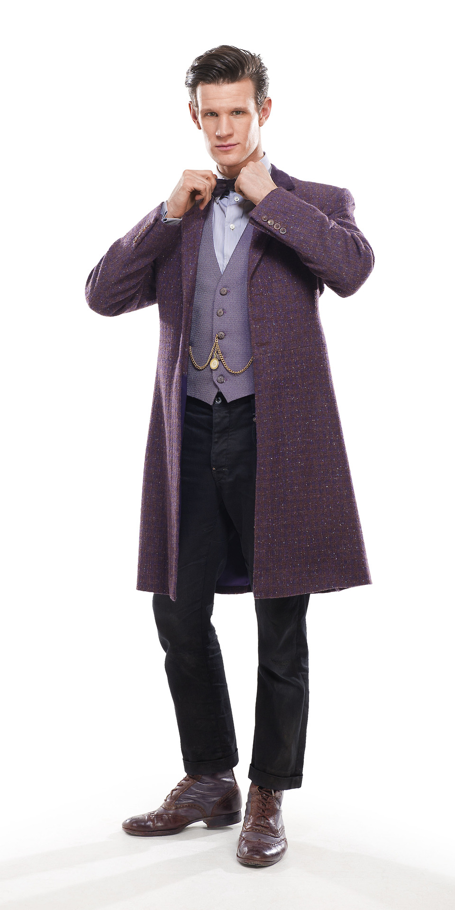

| Home | The Doctors | The Companions | The Villains |
|
|||
The Eleventh DoctorThe Eleventh Doctor is an incarnation of the Doctor, the protagonist of the BBC science fiction television programme Doctor Who. He is played by Matt Smith,[6] in three series as well as seven specials, over an almost four-year-long period. As with previous incarnations of the Doctor, the character has also appeared in other Doctor Who multimedia. Within the show's narrative, the Doctor is a centuries-old alien, a Time Lord from the planet Gallifrey, who travels in time and space in his ship, the TARDIS, frequently with companions. When the Doctor is critically injured, he can regenerate his body but in doing so gains a new physical appearance and with it, a distinct new personality. Smith's incarnation is a quick-tempered but compassionate man whose youthful appearance is at odds with his more discerning and world-weary temperament. His main companions included feisty Scot Amy Pond (Karen Gillan), her husband Rory Williams (Arthur Darvill) and the mysterious Clara Oswald (Jenna-Louise Coleman). He also frequently appeared alongside River Song (Alex Kingston), a fellow time traveller with whom he shared a romantic storyline, and was the last Doctor to appear alongside the long-serving companion Sarah Jane Smith (Elisabeth Sladen) prior to the actress' death, featuring in two episodes of the spin-off programme The Sarah Jane Adventures. |